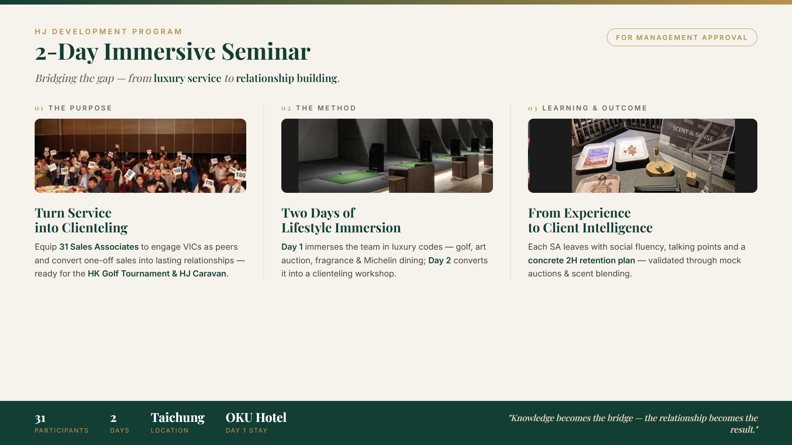
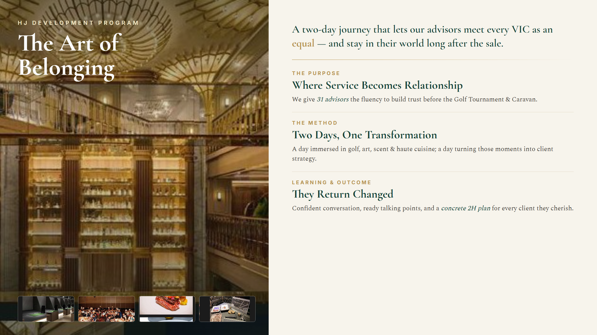
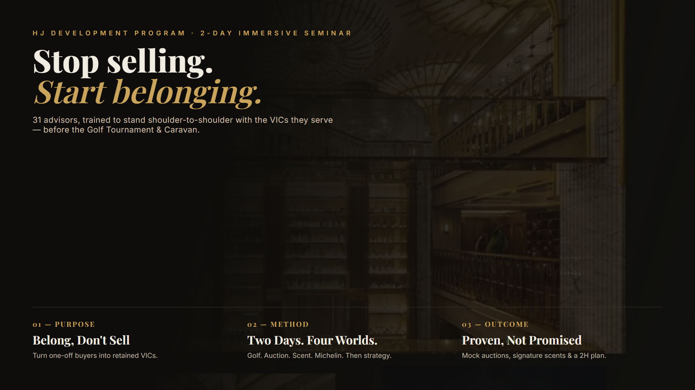
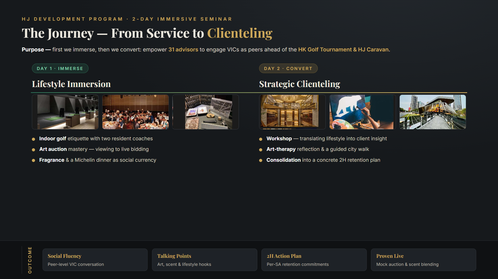
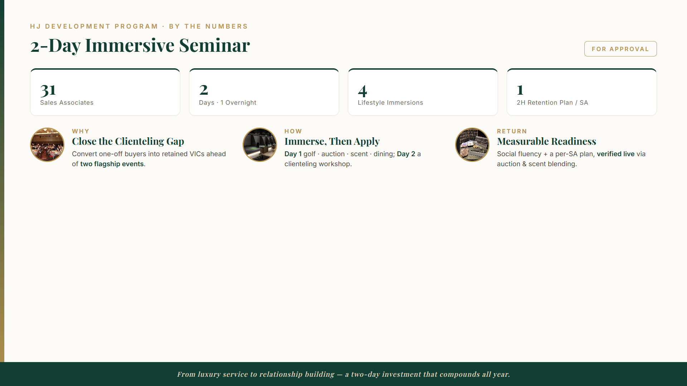
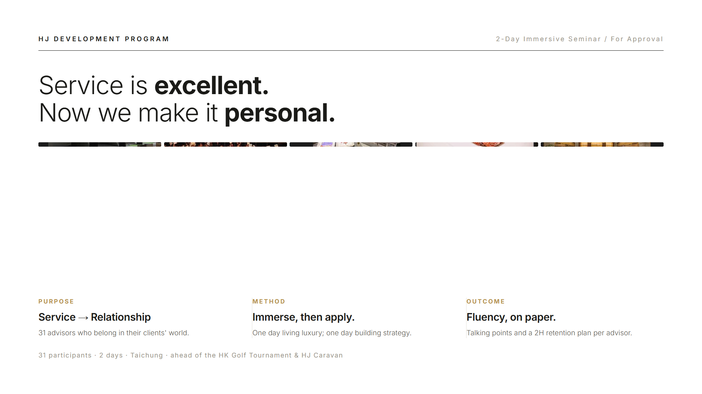
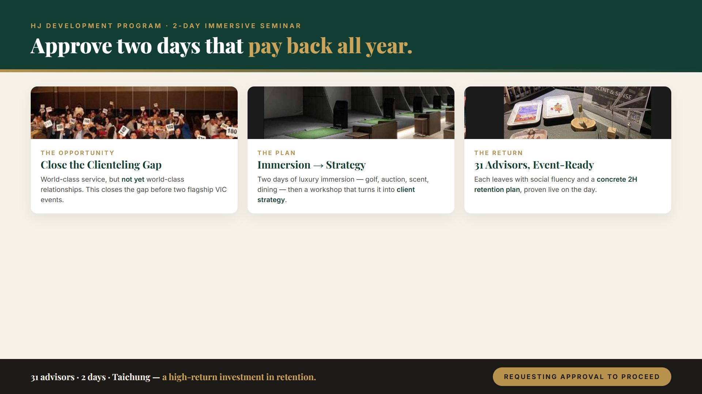
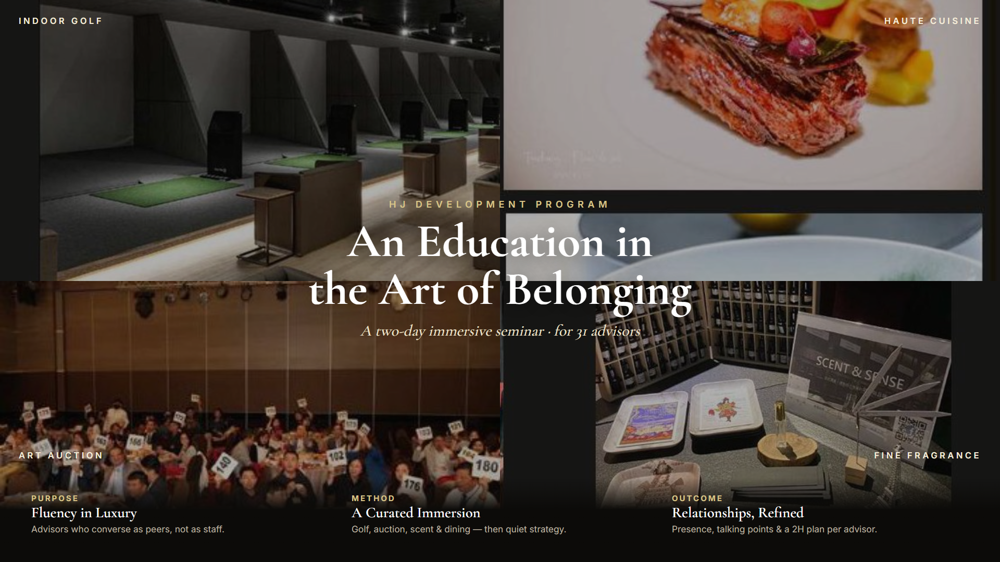
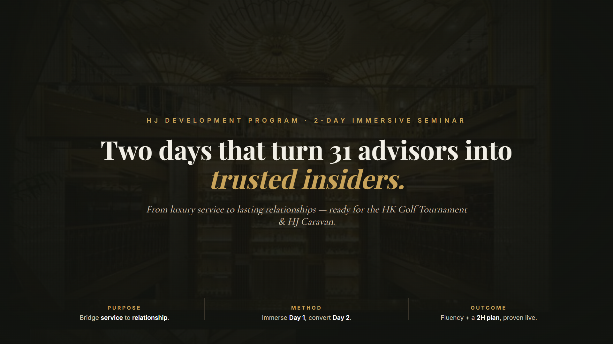
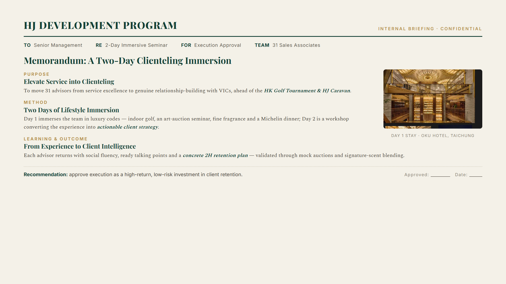

活動內容相同，10 種不同的「視覺風格 × 文案敘述口吻」。每張皆涵蓋 Purpose／Method／Learning & Outcome、英文呈現。點圖開啟原始 HTML（可列印或截圖進 PowerPoint）。

條列董事會體｜ivory + emerald/gold，三欄事實陳述

雜誌敘事體｜大圖 + Cormorant 襯線，情感故事口吻

電影暗調｜短句斷句、強衝擊「Stop selling. Start belonging.」

旅程時間軸｜Day1→Day2 動線敘事

數據體｜大數字 KPI + Why/How/Return

瑞士極簡｜大量留白、超精簡一句話

提案說服體｜大標 + 三卡 + CTA 請求核准

品牌畫冊｜2×2 滿版圖 + 金色襯線，最有奢華感

單一大主張｜一句巨型標語 + 三行微敘述

公文簽呈體｜letterhead + To/Re + 核准簽名欄